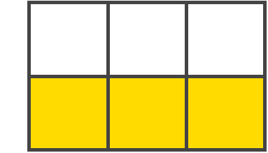

CSS Grid Layout
What is Grid
CSS Grid Layout(aka “Grid” or “CSS Grid”), is a two-dimensional grid-based layout system that, compared to any web layout system of the past, completely changes the way we design user interfaces.
Browser Support
Important CSS Grid terminology
Grid Container
The element on which display: grid is applied. It’s the direct parent of all the grid items. In this example container is the grid container.
<div class="container">
<div class="item item-1"> </div>
<div class="item item-2"> </div>
<div class="item item-3"> </div>
</div>
Grid Item
The children (i.e. direct descendants) of the grid container. Here the item elements are grid items, but sub-item isn’t.
<div class="container">
<div class="item"> </div>
<div class="item">
<p class="sub-item"> </p>
</div>
<div class="item"> </div>
</div>
Grid Line
The dividing lines that make up the structure of the grid. They can be either vertical (“column grid lines”) or horizontal (“row grid lines”) and reside on either side of a row or column. Here the yellow line is an example of a column grid line.

Grid Cell
The space between two adjacent row and two adjacent column grid lines. It’s a single “unit” of the grid. Here’s the grid cell between row grid lines 1 and 2, and column grid lines 2 and 3.
Grid Track
The space between two adjacent grid lines. You can think of them as the columns or rows of the grid. Here’s the grid track between the second and third-row grid lines.
Grid Area
The total space surrounded by four grid lines. A grid area may be composed of any number of grid cells. Here’s the grid area between row grid lines 1 and 3, and column grid lines 1 and 3.

CSS Grid properties
Properties for the Parent
(Grid Container)
display
Defines the element as a grid container and establishes a new grid formatting context for its contents.
Values:
- grid – generates a block-level grid
- inline-grid – generates an inline-level grid
.container {
display: grid | inline-grid;
}
grid-template-columns
grid-template-rows
Defines the columns and rows of the grid with a space-separated list of values. The values represent the track size, and the space between them represents the grid line.
Values:
- <track-size> – can be a length, a percentage, or a fraction of the free space in the grid using the fr unit
- <line-name> – an arbitrary name of your choosing
.container {
grid-template-columns: ... ...;
/* e.g.
1fr 1fr
minmax(10px, 1fr) 3fr
repeat(5, 1fr)
50px auto 100px 1fr
*/
grid-template-rows: ... ...;
/* e.g.
min-content 1fr min-content
100px 1fr max-content
*/
}
Grid lines are automatically assigned positive numbers from these assignments (-1 being an alternate for the very last row).

But you can choose to explicitly name the lines. Note the bracket syntax for the line names:
.container {
grid-template-columns: [first] 40px [line2] 50px [line3] auto [col4-start] 50px [five] 40px [end];
grid-template-rows: [row1-start] 25% [row1-end] 100px [third-line] auto [last-line];
}
Line can have more than one name. For example, here the second line will have two names: row1-end and row2-start:
.container {
grid-template-rows: [row1-start] 25% [row1-end row2-start] 25% [row2-end];
}
If your definition contains repeating parts, you can use the repeat() notation to streamline things:
.container {
grid-template-columns: repeat(3, 20px [col-start]);
}
Which is equivalent to this:
.container {
grid-template-columns: 20px [col-start] 20px [col-start] 20px [col-start];
}
With the introduction of grids, a new unit of measurement emerged: fr
fr(short for fraction) represents the free space inside the grid container.
For example, this code will create three columns, each occupying 1/3 of the parent's width:
.container {
display: grid;
grid-template-columns: repeat(3, 1fr);
}
The equivalent expression is:
.container {
display: grid;
grid-template-columns: 1fr 1fr 1fr;
}
The available free space is calculated after allocating space to all fixed sizes. For example, in the code below, first, a column with a width of 200 pixels will be created, and then the remaining free space (the width of the parent minus 200 pixels) will be divided among the other columns. Each column will occupy a width of (100% - 200px) / 2:
.container {
display: grid;
grid-template-columns: 1fr 200px 1fr;
}
grid-template-areas
Defines a grid template by referencing the names of the grid areas which are specified with the grid-area property. Repeating the name of a grid area causes the content to span those cells. A period signifies an empty cell. The syntax itself provides a visualization of the structure of the grid.
.container {
display: grid;
grid-template-columns: 1fr 200px 1fr;
}
Values:
- <grid-area-name> - the name of a grid area specified with grid-area
- . – a period signifies an empty grid cell
- none – no grid areas are defined
.container {
grid-template-areas:
"<grid-area-name> | . | none | ..."
"...";
}
Example
.item-a {
grid-area: header;
}
.item-b {
grid-area: main;
}
.item-c {
grid-area: sidebar;
}
.item-d {
grid-area: footer;
}
.container {
display: grid;
grid-template-columns: 50px 50px 50px 50px;
grid-template-rows: auto;
grid-template-areas:
"header header header header"
"main main . sidebar"
"footer footer footer footer";
}
That’ll create a grid that’s four columns wide by three rows tall. The entire top row will be composed of the header area. The middle row will be composed of two main areas, one empty cell, and one sidebar area. The last row is all footer.
grid-template
A shorthand for setting grid-template-rows, grid-template-columns, and grid-template-areas in a single declaration.
Values:
- none - sets all three properties to their initial values
- <grid-template-rows>/<grid-template-columns> - sets grid-template-columns and grid-template-rows to the specified values, respectively, and sets grid-template-areas to none
.container {
grid-template: none | <grid-template-rows> / <grid-template-columns>;
}
It also accepts a more complex but quite handy syntax for specifying all three. Here’s an example:
.container {
grid-template:
[row1-start] "header header header" 25px [row1-end]
[row2-start] "footer footer footer" 25px [row2-end]
/ auto 50px auto;
}
That’s equivalent to this:
.container {
grid-template-rows: [row1-start] 25px [row1-end row2-start] 25px [row2-end];
grid-template-columns: auto 50px auto;
grid-template-areas:
"header header header"
"footer footer footer";
}
column-gap
row-gap
grid-column-gap
grid-row-gap
Specifies the size of the grid lines. You can think of it like setting the width of the gutters between the columns/rows.
Values
- <line-size> - a length value
.container {
/* standard */
column-gap: <line-size>;
row-gap: <line-size>;
/* old */
grid-column-gap: <line-size>;
grid-row-gap: <line-size>;
}
.container {
/* standard */
column-gap: <line-size>;
row-gap: <line-size>;
/* old */
grid-column-gap: <line-size>;
grid-row-gap: <line-size>;
}
Example:

gap
grid-gap
Values:
- <grid-row-gap> <grid-column-gap> - a length value
.container {
/* standard */
gap: <grid-row-gap> <grid-column-gap>;
/* old */
grid-gap: <grid-row-gap> <grid-column-gap>;
}
Example
.container {
grid-template-columns: 100px 50px 100px;
grid-template-rows: 80px auto 80px;
gap: 15px 10px;
}
justify-items
Aligns grid items along the inline (row) axis (as opposed to align-items which aligns along the block (column) axis). This value applies to all grid items inside the container.
Values:
- start - aligns items to be flush with the start edge of their cell
- end - aligns items to be flush with the end edge of their cell
- center - aligns items in the center of their cell
- stretch - fills the whole width of the cell (this is the default)
.container {
justify-items: start;
}

.container {
justify-items: end;
}

.container {
justify-items: center;
}
.container {
justify-items: stretch;
}
align-items
Aligns grid items along the block (column) axis (as opposed to justify-items which aligns along the inline (row) axis). This value applies to all grid items inside the container.
Values:
- stretch - fills the whole height of the cell (this is the default)
- start - aligns items to be flush with the end edge of their cell
- end - aligns items to be flush with the end edge of their cell
- center - aligns items in the center of their cell
- baseline - align items along text baseline. There are modifiers to baseline — first baseline and last baseline which will use the baseline from the first or last line in the case of multi-line text.
.container {
align-items: start;
}
.container {
align-items: end;
}
.container {
align-items: center;
}
.container {
align-items: stretch;
}
justify-content
Sometimes the total size of your grid might be less than the size of its grid container. This could happen if all of your grid items are sized with non-flexible units like px. In this case you can set the alignment of the grid within the grid container. This property aligns the grid along the inline (row) axis (as opposed to align-content which aligns the grid along the block (column) axis).
Values:
- start - aligns the grid to be flush with the start edge of the grid container
- end - aligns the grid to be flush with the end edge of the grid container
- center - aligns the grid in the center of the grid container
- stretch - resizes the grid items to allow the grid to fill the full width of the grid container
- space-around - places an even amount of space between each grid item, with half-sized spaces on the far ends
- space-between - places an even amount of space between each grid item, with no space at the far ends
- space-evenly - places an even amount of space between each grid item, including the far ends
Values:
- space-around - places an even amount of space between each grid item, with half-sized spaces on the far ends
- space-between - places an even amount of space between each grid item, with no space at the far ends
- space-evenly - places an even amount of space between each grid item, including the far ends
.container {
justify-content: start;
}

.container {
justify-content: end;
}

.container {
justify-content: center;
}
.container {
justify-content: stretch;
}
.container {
justify-content: space-around;
}

.container {
justify-content: space-between;
}
.container {
justify-content: space-evenly;
}